Tip super untuk perintah `fg`: saat Ctrl+Z menyelamatkan sesi terminal Anda
Diterbitkan 18 April 2026
- Masalah: terminal yang sibuk
- tiga perintah esensial
- Skenario 1: Build yang panjang
- Skenario 2: editor yang dilapkan
- Scenario 3 : Proses opencode ditangguhkan
- Skenario 4: Mengelola beberapa pekerjaan secara bersamaan
- Perbedaan antara fg, bg, Ctrl+Z, Ctrl+C dan &
- Siklus hidup lengkap dari sebuah pekerjaan
- Tips lanjut
- Jebakan dan kesalahan umum
- Diagram Ringkasan
- Mengapa fg dianggap kurang?
- Catatan teknis : sinyal
- Kesimpulan
- Referensi
Anda melempar`./gradlew build`, terminal terblokir selama 3 menit, dan Anda perlu melakukan sesuatu yang lain menunggu ? Tidak perlu membuka tab baru.`Ctrl+Z`menangguhkan proses,`fg`Dia mengembalikannya tepat di tempat Anda meninggalkan. Ini adalah tips Unix yang paling kurang dihargai dalam kehidupan sehari-hari seorang pengembang.
- toc
-
[]
Masalah: terminal yang sibuk
Setiap developer telah menjalani situasi ini:
$ ./gradlew build
> Building...Terminal terblokir. Anda tidak dapat lagi mengetik perintah apa pun. Dan Anda perlu melihat sebuah file, menjalankan sebuah`git status`, atau memeriksa port yang sedang digunakan.
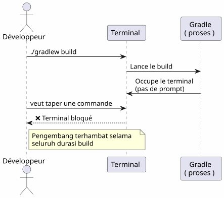
Kebanyakan pengembang membuka terminal baru. Namun ada solusi yang lebih elegan, lebih cepat, dan bawaan: manajemen pekerjaan.
tiga perintah esensial
Ctrl+Z — Menangguhkan (SIGTSTP)
`Ctrl+Z`mengirim sinyal`SIGTSTP`ke proses latar depan. Prosesnya adalahditangguhkan— tidak terbunuh — dan terminal kembali mendapatkan prompt-nya.
$ ./gradlew build
> Building...
^Z
[1]+ Stoppé ./gradlew build
$Angka di antara tanda kurung`[1]`adalahnomor pekerjaan. Le `+`menunjukkan pekerjaan default
fg — Membawa ke depan
`fg`Memulihkan job yang dijeda ke latar depan. Proses melanjutkan tepat dari tempat ia berhenti.
$ fg
./gradlew build
> Building... (reprend où il en était)Dengan nomor pekerjaan spesifik:
$ fg %2bg — Lanjutkan di latar belakang
`bg`lanjutkan proses tanpa memblokir terminal. Ideal untuk build yang panjang.
$ bg
[1]+ ./gradlew build &
$Le `&`pada akhirnya berarti bahwa proses berjalan di latar belakang.
jobs — Daftar pekerjaan shell
$ jobs
[1]- Stoppé vim README.md
[2]+ En cours ./gradlew build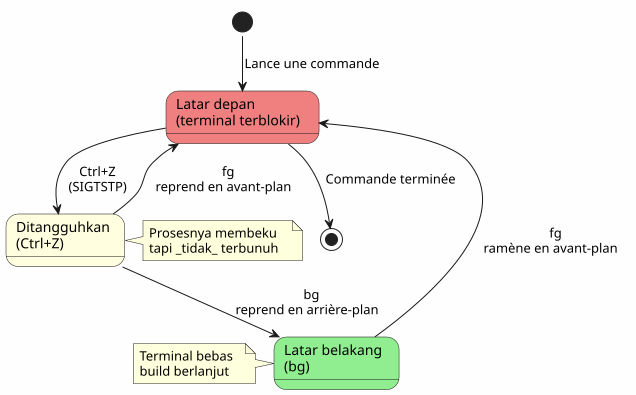
Skenario 1: Build yang panjang
Ini adalah kasus penggunaan yang paling umum. Anda menjalankan build Gradle, terminal terblokir, dan Anda perlu melakukan hal lain.
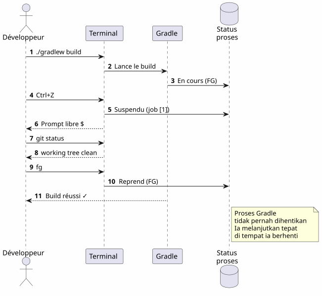
langkah demi langkah
$ ./gradlew build
> Building...
^Z
[1]+ Stoppé ./gradlew build
$ git status
On branch main
nothing to commit, working tree clean
$ fg
./gradlew build
> Building...
BUILD SUCCESSFUL in 2m 34sSkenario 2: editor yang dilapkan
Anda berada di`vim`, Anda perlu membuka file lain tanpa meninggalkan`vim`.
# Dans vim, en mode commande :
:shell
$ cat /path/to/other/file.txt
$ exit
# Retour dans vimTetapi ini berat. Dengan`Ctrl+Z`, ini langsung :
# Dans vim, n'importe quel moment :
Ctrl+Z
[1]+ Stoppé vim README.md
$ cat /path/to/other/file.txt
# ... lire le fichier ...
$ fg
vim README.md
# Retour exact là où on en était, curseur en place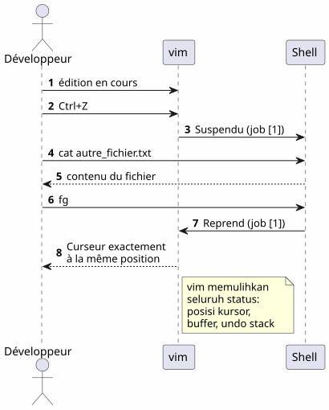
</think> </think> (No content to translate)vim`mengembalikan dengan sempurna keadaan setelah sebuah`fg: posisi kursor, isi buffer, riwayat pembatalan — semua dipertahankan.
Scenario 3 : Proses opencode ditangguhkan
Ini adalah skenario yang memotivasi artikel ini. Anda menggunakan`opencode`(alat CLI untuk mengendalikan LLM pada kode Anda), dan prosesnya ditangguhkan.
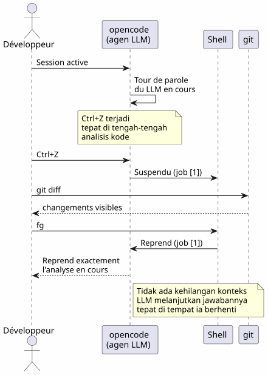
$ opencode
# ... session en cours, LLM analyse le code ...
^Z
[1]+ Stoppé opencode
$ git diff HEAD~1
# vérifier les changements récents
$ fg
opencode
# Le LLM reprend là où il s'était arrêtéKeuntungannya adalah ganda:
-
Tidak ada kehilangan konteks: sesi LLM, riwayat percakapan, file yang terbuka — semuanya dipertahankan
-
Tidak ada restart: tidak perlu menjalankan ulang opencode, tidak perlu memuat ulang konteks, tidak perlu menjelaskan ulang masalah kepada LLM
Skenario 4: Mengelola beberapa pekerjaan secara bersamaan
fg et `bg`Menerima nomor pekerjaan untuk menargetkan proses tertentu ketika beberapa proses ditangguhkan.
$ vim config.yml
^Z
[1]+ Stoppé vim config.yml
$ ./gradlew test
^Z
[2]+ Stoppé ./gradlew test
$ htop
^Z
[3]+ Stoppé htop
$ jobs
[1] Stoppé vim config.yml
[2]- Stoppé ./gradlew test
[3]+ Stoppé htop
$ fg %2
./gradlew test
# Le build reprend en avant-plan
$ bg %3
[3] htop &
# htop reprend en arrière-plan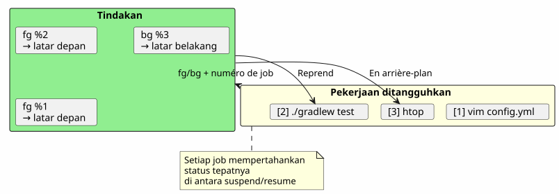
Ringkasan perintah pekerjaan
| Pesanana | Efek | Contoh |
|---|---|---|
|
Jeda proses latar depan |
Pengiriman`SIGTSTP` |
|
Mengambil kembali pekerjaan default ke latar depan |
|
|
Lanjutkan pekerjaan n di latar depan |
|
|
Melanjutkan job default di latar belakang |
|
|
Meneruskan pekerjaan n di latar belakang |
|
|
Daftar pekerjaan shell saat ini |
|
|
Selesaikan pekerjaan n |
|
Perbedaan antara fg, bg, Ctrl+Z, Ctrl+C dan &
Banyak pengembang bingung dengan mekanisme ini. Ini adalah penjelasan yang penting.
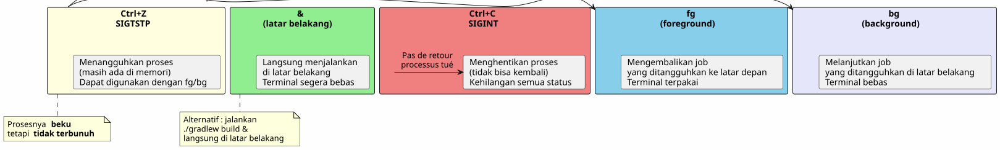
| Pintasan/Perintah | sinyal | Efek | Kembali? |
|---|---|---|---|
|
|
Menjeda proses (beku, di memori) |
Ya :`fg` ou |
|
|
Matikan proses (selesai) |
Tidak : proses dihancurkan |
|
|
Membunuh proses + core dump |
Tidak: proses dihancurkan |
|
— |
Jalankan langsung di latar belakang |
`fg`untuk membawakannya kembali ke lat depan |
Ctrl+Z`adalahnon destruktif. Prosesnya beku seperti yang ada, dalam memori. Anda dapat melanjutkan segera dengan`fg. Ini adalah jeda, bukan berhenti.
|
Siklus hidup lengkap dari sebuah pekerjaan
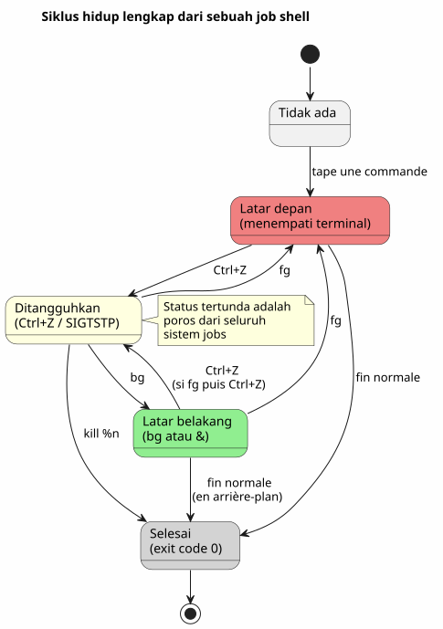
Tips lanjut
fg dengan pekerjaan paling baru dan pertukaran
fg`tanpa argumen mengembalikan pekerjaan yang ditandai+(terbaru). Anda juga dapat menggunakan%-`untuk menargetkan pekerjaan sebelumnya :
$ vim file1.txt
^Z
[1]+ Stoppé vim file1.txt
$ vim file2.txt
^Z
[2]+ Stoppé vim file2.txt
$ fg # ramène job [2] (le plus récent)
$ fg %- # ramène job [1] (le précédent)Mengerjakan pekerjaan dengan baik
$ jobs
[1]- Stoppé vim config.yml
[2]+ Stoppé ./gradlew test
$ kill %2 # envoie SIGTERM au job 2
$ kill -9 %1 # envoie SIGKILL au job 1 (force)disown : melepaskan dari shell
disown`Menghapus satu pekerjaan dari tabel pekerjaan shell. Proses terus berjalan tetapi tidak dapat lagi dikembalikan dengan`fg</think> (empty output)
$ ./gradlew build &
[1] 12345
$ disown %1
# Le processus continue mais n'est plus lié au shell
# Ça survives à la fermeture du terminalGabungkan dengan nohup untuk proses-proses yang lama
Agar proses dapat bertahan saat terminal ditutup:
$ nohup ./gradlew build &
[1] 12345
$ disown %1
# Le build continue même si vous fermez le terminal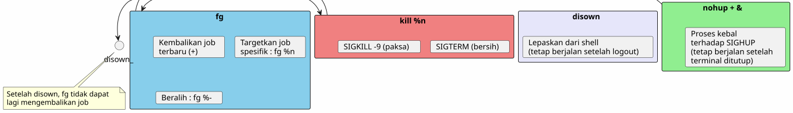
Jebakan dan kesalahan umum
Mengalirkan Ctrl+Z dan Ctrl+C
Ini adalah kesalahan yang paling sering.`Ctrl+C`menghentikan proses`Ctrl+Z`Dia menangguhkannya. Jika Anda menekan`Ctrl+C`Secara refleks, seluruh keadaan hilang — file terbuka, sesi LLM, build sedang berlangsung.
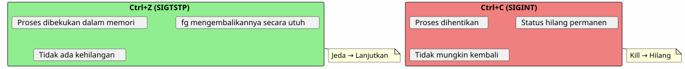
Pekerjaan-pekerjaan adalah lokal untuk shell
jobs, fg et `bg`Berfungsi hanya di shell yang meluncurkan proses-proses tersebut. Jika Anda membuka terminal baru, Anda tidak akan melihat pekerjaan dari yang lain.
# Terminal 1
$ vim file.txt
^Z
[1]+ Stoppé vim file.txt
# Terminal 2 (nouveau)
$ jobs
# (rien — les jobs sont locaux au shell)Untuk melihat proses system-wide, gunakan`ps` ou htop(empty)
ps aux | grep vimPekerjaan tidak bertahan saat shell ditutup
Jika Anda menutup terminal, semua pekerja yang ditangguhkan atau yang berjalan di latar belakang akan dihancurkan. Agar sebuah proses tetap hidup, gunakan`nohup`+disown :
$ nohup ./gradlew build &
[1] 12345
$ disown %1
# Fermer le terminal → le build continueProses interaktif dan fg
Beberapa program interaktif tidak berjalan baik setelah satu`Ctrl+Z`+fg. Ini jarang tetapi terjadi :
-
Beberapa program yang menggunakan sinyal (vim, htop, less menangani dengan baik`Ctrl+Z`)
-
Program jaringan yang berjalan lama (ssh, opencode) biasanya pulih dengan benar
-
Program yang memodifikasi terminal (ncurses) terkadang dapat meninggalkan terminal dalam keadaan yang tidak terduga
Jika terminal rusak setelah satu`fg`, ketik :
resetDiagram Ringkasan
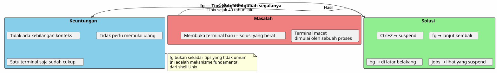
Mengapa fg dianggap kurang?
Kebanyakan pengembang modern menemukan`fg`lambat, bahkan tidak pernah. Beberapa alasan :
-
IDE menyembunyikan terminal: VS Code menyediakan terminal terintegrasi, tetapi tab-tab banyak membuat`fg`Terlihat kurang diperlukan
-
Alat grafis mengganti CLI: manajer file, pemantau sistem, klien Git grafis
-
tmux dan screen: multiplexer ini menyelesaikan masalah yang sama dengan cara yang berbeda, tapi`fg`lebih sederhana dan selalu tersedia
Namun,`fg`adalah :
-
Universal: ada di semua shell POSIX (bash, zsh, fish…)
-
Tanpa ketergantungan: tidak perlu menginstal tmux atau screen
-
seketika: dua pukulan (
Ctrl+Z`lalu`fg) untuk menangguhkan dan melanjutkan -
Penyimpan konteks: keadaan proses masih utuh
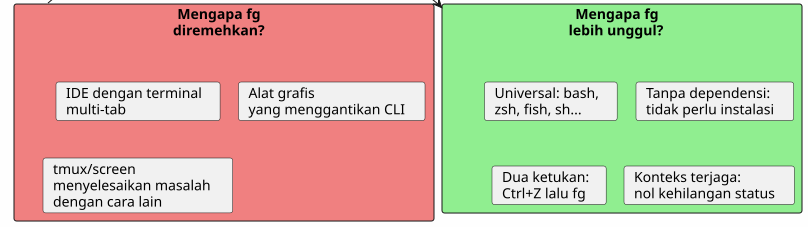
Catatan teknis : sinyal
Untuk yang penasaran, berikut sinyal yang terlibat:
| sinyal | nama | Dikirim oleh | Efek |
|---|---|---|---|
2 |
|
|
Interupsi — menghentikan proses |
3 |
|
|
Keluar dengan core dump |
18 |
|
|
Berhenti interaktif — menghentikan proses |
19 |
|
|
Continue — melanjutkan proses yang ditangguhkan |
15 |
|
|
Penghentian bersih |
9 |
|
|
Pengakhiran paksa (tidak dapat diintersep) |
Alur lengkap :
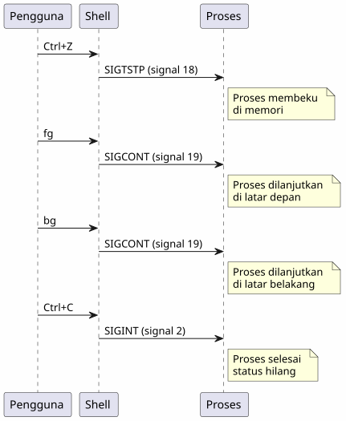
Kesimpulan
`fg`Bukanlah sebuah tips yang tidak jelas — ini adalah mekanisme dasar dari Unix shell, yang tersedia sejak tahun 1970-an. Fakta bahwa kebanyakan pengembang mengabaikannya adalah gejala dari jaman kita : IDE dan multiplexer telah menjauhkan kita dari dasar.
Tetapi ketika Anda berada pada server SSH, di terminal minimal, atau sekadar sedang menggunakan`opencode`dan LLM sedang bekerja penuh —Ctrl+Z, fg, bg, `jobs`adalah teman terbaik Anda.
_ Ctrl+Z menghentikan, fg melanjutkan. Ini adalah pause-play terminal. _
Referensi
-
man bash— bagian KONTROL PEKERJAAN -
man signal— daftar sinyal POSIX